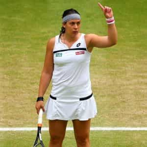
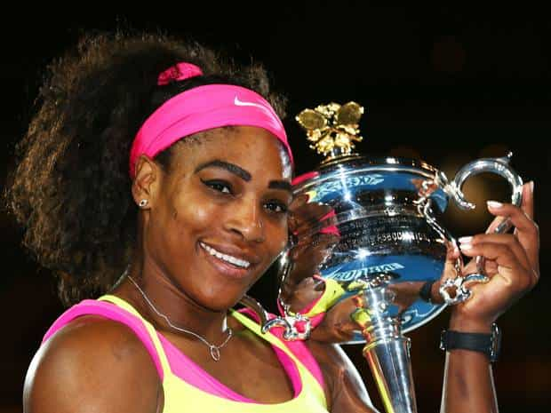
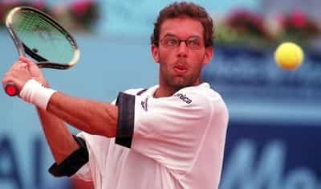
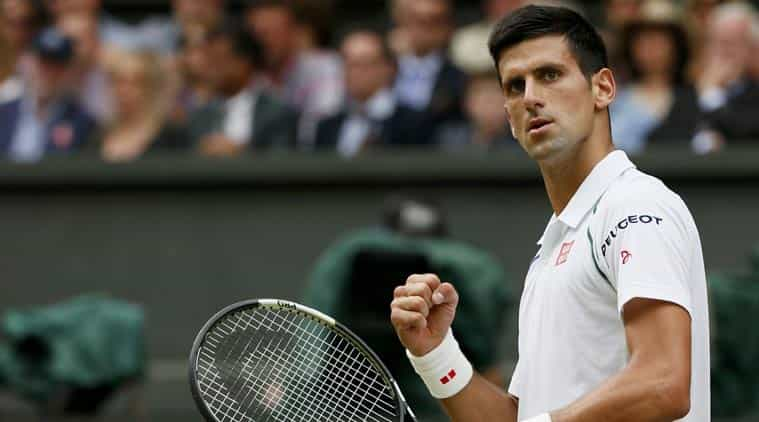

< < < Back
Why It’s Time To Boycott Women’s Tennis – Return Of Kings
With the Australian Open starting next month, it’s time to highlight once again that women tennis players are massively overpaid. Female players are paid the same as their male counterparts, despite being vastly inferior and only playing three sets instead of five. Unfortunately, due to feminism dominating the political and social agenda, repeated protests about this injustice have fallen on deaf ears. This time, I’m issuing a call for a more radical move: boycotting women’s tennis.
A Personal Account
I used to be a pretty handy tennis player in my day. I was nowhere near good enough to be professional, but I was a division 1 player in high school and still enjoy a social hit. I loved the sport, so when a women’s satellite tournament came to the city I was living in at the time, I went down to check it out.
The main prize was a wildcard into the Australian Open, so there was no shortage of eager young women from all over the world. And hey, good on them for being enthusiastic, ambitious and having a go. But here’s the deal: the girls just weren’t that good. Their skills were absolutely nothing special, and even the best players couldn’t whip a topspin forehand or cut a slice like I can. Their serves were coming down at nothing like the speed I had previously faced and would have been relatively easy to return.
The strength and physicality simply wasn’t evident, and a strong male player at local club level would have overpowered them. Had I entered, I might not necessarily have been able to win the whole thing, but there is no doubt in my mind I would have been highly competitive. I’ve never reached any level of note in the sport. I’ve never had coaching, don’t train seriously, and am just your average reasonably fit guy with above average hand eye coordination. If I had been given the opportunity to dedicate six months prior to the event to train full-time for it, there is no doubt I would have taken it out.

With a gut like that, Bartoli could do with playing an extra set or two
It got me thinking. Pro tennis has embraced “equal pay,” symbolising that in the minds of administrators, the value of men and women players is the same. That’s absurd. You just cannot compare Serena Williams to Djokovic, it’s night and day! At the other end of the spectrum, why should men be denied careers in sport so their places can be taken by inferior women, just because of their gender?
I would have no problem with women’s pro sport if it was able to stand on its own two feet. In practice, like virtually all feminist programs, women’s pro sport is an indulgence whose existence relies on taking from more deserving men. Rubbing salt into the wound, they even have the cheek to work part-time but demand full-time pay.

Serena Williams: an example of where the gender pay gap actually does exist.
Whilst Djokovic, Nadal and Federer earn huge amounts of money, travel the world and live like kings, in 2012 the 150th ranked player earned just $75,000 in prize money, and the 200th ranked player just $20,780. Think about how many quality tennis players there are in the world. If you are ranked 200, you are damn good, but will still struggle to make a living.
This is incredibly unfair when you consider women making millions of dollars would get thrashed by these men staying at budget hotels and battling it out on the periphery of the circuit. Serena Williams, for example, has more than $70 million dollars in career prize money. She and her sister Venus once bragged they could beat any man outside the world’s top 200. The challenge was accepted by Karsten Braasch, a German ranked 203. Before the matches, Braasch played a round of golf in the morning, drank a couple of beers, smoked a few cigarettes and then beat Serena 6-1 and Venus 6-2.
Braasch clearly proved he was a better player and deserved to be paid more. Serena said after the game: “I didn’t know it would be that hard. I hit shots that would have been winners on the women’s tour and he got them easily.” Braasch’s career prizemoney? Less than $1.5 million.

Karsten who? He’s the guy who annihilated the greatest female player of all time but has about 2% of her career earnings.
It’s time for feminists to put up or shut up, quite frankly. Either you’re equal or you’re not. If you truly believe you are, you must demand the immediate removal of all gender divisions in pro sports. That would be equality in the truest sense of the word (opportunity as opposed to outcome), but of course feminists will never allow this because deep down they know there would barely be a pro sportswoman left on the planet if they were forced to compete on a level playing field.
Let’s face it, women’s sport generally sucks as a spectacle, because it’s a vastly inferior product. In a free market, whatever your field, you don’t deserve to be paid the same, let alone more, as somebody who is better than you. The checkout operator at 7-11 doesn’t demand they get a pay rise because it’s not fair they weren’t born with the same intelligence as a mechanical engineer.
However, right now a ludicrous blind spot by administrators means women tennis players are being massively rewarded for being vastly inferior to their male contemporaries. If they continue to reject equality, insist on being segregated and having their own tour their prize money should be 50% of the men at best. That would still be a more than fair result for them, and deep down they know it.
Why is the hourly pay rate higher for inferior talent?
At the 2015 US Open, women’s champ Serena Williams spent 11 hours 17 minutes on court, compared with the men’s winner Marin Cilic, who spent 16 hours 43 minutes. Such a discrepancy is standard for all major tournaments. Feminists usually scoff at “biological differences” between men and women but eagerly embrace them when they stand to benefit. They claim women should only have to play three sets because they “aren’t as physically strong as men.” What a cop out.
Getting paid the same as men who would annihilate them to play other females over five sets is a hell of a deal for women, but they won’t even do that! After years of receiving free upgrades to first class, a free upgrade to business class is something they turn their entitled noses up at. If women can run marathons they can play five sets of tennis, especially when it’s for millions of dollars. If they truly believe they aren’t up to the same physical requirements of their male counterparts and they only want to work part-time, sorry girls, but it’s time for a pay cut.
If women want to get paid the same as men like Cilic, they should have to play them
Let’s say you work with a man in his 60s. He and his sexagenarian friends go home at midday every day, but are paid the same as you, even though you do the same job. When you dare point out this is unfair, they cite discrimination, call you a bigot, and claim the arrangement actually is perfectly reasonable because they are older and “not as physically strong as you, and we get tired easier.” Nobody would tolerate this, of course. The senior citizens would be paid part time or told to retire. What makes being a woman so special?
The depth of talent in the men’s game is rarely mentioned. Unlike top women, men must be highly vigilant and on their game from the early rounds. Even low-ranked men often have a big weapon, such as a massive serve. On any given day, if they happen to be on, they can pose a serious threat to even the world’s best players. The top ten women players routinely coast through their matches until the finals, never seriously challenged, all the while being paid the same as the men slugging it out in bruising physical encounters.
Men on tour are reluctant to call out this obvious sexism due to the risk of being fined and losing their sponsors, so we need to step up to the plate for them and also keep the dream alive for aspiring future male pros. It’s time to boycott women’s tennis. I know what you are saying: “I don’t watch that garbage anyway!” Having said that, you might be tempted to watch Djokovic or Federer, so this means turning off the TV when the women come on, or if you are at a tournament, walking out of the stadium and watching another match.
The empty stands and terrible ratings will reveal women’s tennis for what it is: a bunch of shrieking, B Grade athletes. Sure, you might miss checking out some shapely bronzed Eastern European legs or cleavage, but it’s a price you should be prepared to pay for your fellow men out there struggling to make a living on the pro tennis circuit.

Djokovic spoke out about the raw deal men get, but was forced to quickly backpedal to prevent losing sponsorship
The obvious lie men and women’s sport is inherently the same must be called out. It is important we take a stand because of the dangerous precedent tennis pay sets. Make no mistake, emboldened feminists are pushing for increasingly ludicrous employment arrangements that blatantly favour women. They want men to be treated like second class citizens, even in fields they dominate. This is coming to a workplace near you, if it’s not already there.
Any media coverage and prize money for women’s sport is an indulgence. I’m not opposed to the men’s game subsidising women sufficiently so the best players can make a living from it, but this sense of entitlement sportswomen and feminist commentators have has got to stop. They are nowhere near as good as the men and never will be, so the least they could do is be reasonable and play five sets.
But as always with feminists, they fiercely resist anything that would create true equality between the sexes. However, the striking reality is the viability of women’s tennis depends entirely on piggy backing on the popularity of the men’s game. It’s time pay packets reflected that.
Read More: World’s Number One Male Tennis Player Says Women Do Not Deserve “Equal” Pay